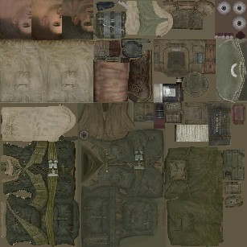
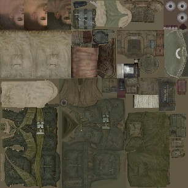
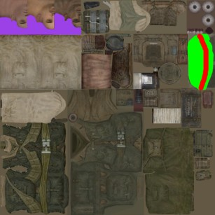
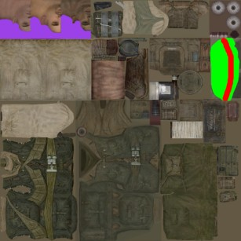
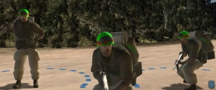
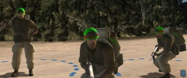

It looks like you're using a browser that does not support CSS - why don't you upgrade to a totally free new browser like Firefox?
DDS Tool
The game's textures are converted to a format called DDS. For whatever image editor you use, you'll need to make sure it can read and write DDS files. If you use The GIMP (which you can get for free), then a DDS plugin is available from the plugin registry (download the windows binaries). I recommend you download and install that if you are using The GIMP.
Show me the textures!
The texture files can be found in data\ art\ models, and have an RGT file extension. Lets find the engineer file: data\ art\ models\ races\ allies\ soldiers\ shared_textures\ tex_al_engineer.rgt . Right click on this file and choose Dump RGT to TGA/DDS. A message will appear saying that the RGT has been converted to DDS DXT1 with mip levels - it is important to remember what kind of DDS file it is. You should end up with a DDS file that looks like this:


Lets get editing...
If you open this DDS into The GIMP, you get no popup asking how to import the DDS, which is nice. Now you can apply your creative stlye:

Once you're done, do NOT save the file, you MUST "save as" the file as a DDS again. A save as DDS dialog will popup. Make sure the right texture type (compression) is selected from the dropdown ("DXT1" in this case). Tick or do not tick Generate mipmaps (depending on wether or not it said "with mip levels" when you converted the RGT). Press OK to finish the save process.

Once you're done, do NOT save the file, you MUST "save as" the file as a DDS again. A save as DDS dialog will popup. Make sure the right texture type (compression) is selected from the dropdown ("DXT1" in this case). Tick or do not tick Generate mipmaps (depending on wether or not it said "with mip levels" when you converted the RGT). Press OK to finish the save process.
Getting it back ingame
Close The GIMP and go back to the mod studio. Right click on the engineer's DDS file and choose Convert DDS to RGT. Go to the Play menu, tick dev mode, and then choose play in CoH.

Back to tutorial list

Back to tutorial list
This documentation is provided under the GNU General Public License. All trademarks / copyrights are tm/r/c their respective owners.